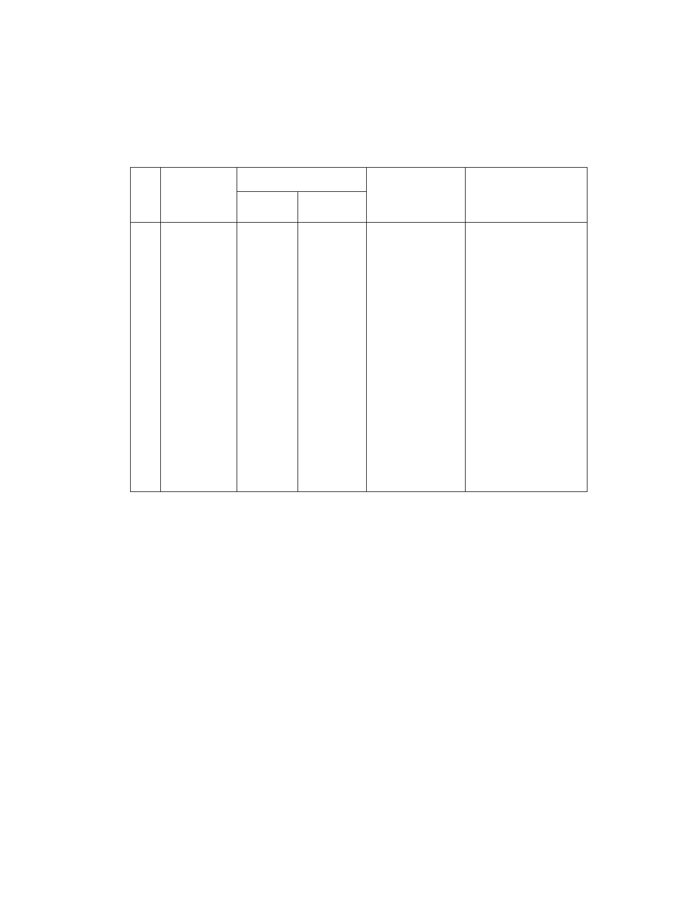

五、計畫內容概述：
（一）主要計畫：
1.變更計畫內容：(土地使用分區)
編 變更內容
位置
號 原計畫 新計畫
變更理由
備註
1. 為 活 化 本
1
臺北市文山
區老泉段三
小 段 358 、
360、361、
365( 全 部 )
及 364( 部
分)地號土
地
保護區
文化景觀
保存區
市珍貴文化景
觀資產，妥善維
護「優人神鼓山
上劇場」文化景
觀並保全其環
境。
2. 為 展 現 表
演藝術文化新
風貌，創造具地
區特色之城市
文化空間，並引
導市民體驗文
化藝術，提供保
存文化及滋潤
1. 市 府 97.02.13
北市文化二字第
09730123500號函公
告登錄「優人神鼓山
上劇場」為臺北市之
文化景觀在案。
2. 變 更範圍包括
臺北市文山區老泉
段三小段358、360、
361 及365 地 號等 4
筆土地及夾雜其間
之 同 小段364 地 號
等1 筆之部分土地。
心靈之場域。
2.回饋計畫：
本計畫應於細部計畫另行擬訂有關提升國民文化素養及促進文
化藝術普及之具體回饋計畫。
3.防災計畫概述：
(1) 依內政部93年10月7日發布之「劃設消防車輛救災活動
空間指導原則」，有關狹小道路巷弄有關消防救災管理
指導原則中係以：「定期舉辦防災編組演練，強化自我
防災意識與自救能力，一旦發生災害能立即通報、避難
疏散及初期滅火，使災害減至最低。」由於本計畫之聯
外道路(德高嶺步道)部分路段較為狹小，故將遵循該原
則辦理，加強常態性之防災自衛編組及訓鍊，以強化災
害初期滅火及自救之能力。
第 - 8 - 頁，共 31 頁